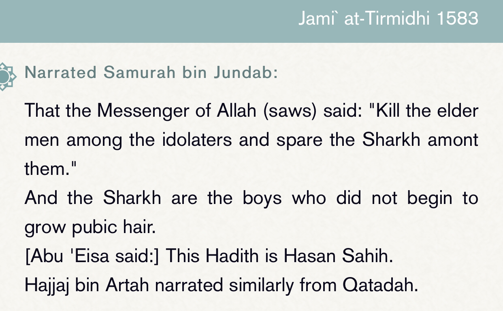

The claim is found in Sahih al-Bukhari 3012
Translation: “And for his (pbuh) saying (they are from them) means the ruling for this case and not
allowing intentional killing to them , but because they want to reach the place and they are stopping
them here there killing is permissible”
-Source: Fathul-Bari Sharh Sahih al-Bukhari of Isamel al-Bukhari (RH) , Ibn hajar al-asqualani (RH)
volume 6 page number 147 explaining his saying (they are from them) of hadith Sahih al-Bukhari 3012 print
of Al-Maktaba al-Salafiyah
Hadith like Sahih al-bukhari 3015 prove it is impermissible
As for the hadith of killing old men it is weak and the 3 madhabs are against that check
『⚠』offensive-jihad-killing-non-…

The hadith in abi dawud is weak because it contains al-Hassan al-basri who is narrating directly without
giving evidence he heard from samara bin jundub, and he is a mudalis. The report from from tirmidhi is
weak cause 1 sa’id bin bishr is munkar al-hadith or da’if (weak narrator) and 2 al-walid bin muslim didn’t
hear from him meaning there is a disconnection in the chain
Zaid ibn Wahb reported: Umar ibn al-Khattab, may Allah be pleased with him, decreed,
“Do not steal the spoils, do not be treacherous with the enemy, do not mutilate the dead,
do not kill children, and fear Allah regarding the farmers who do not wage war against you.”
Source: Sunan Sa’īd ibn Mansūr 2466
Ibn Qudamah said, “We adhere to the saying of Umar. The companions of the Messenger of Allah,
peace and blessings be upon him, did not kill farmers when they liberated the lands, because they
do not fight. In this, they resemble old men and priests.”
Source: al-Mughnī 7617